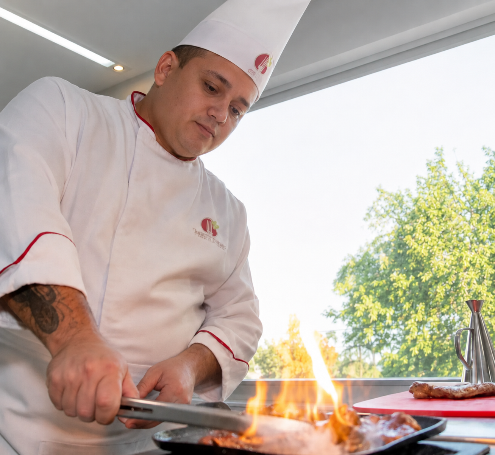
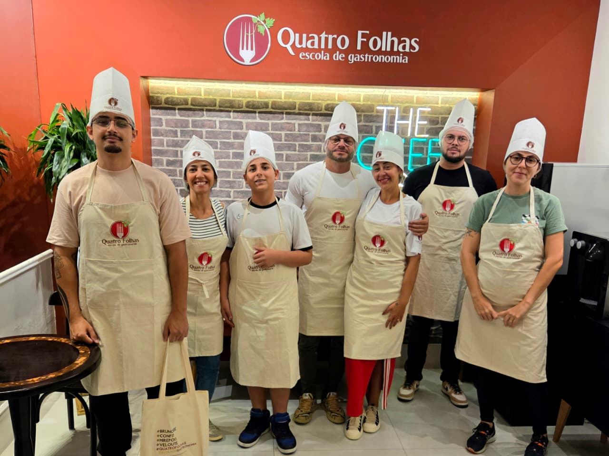
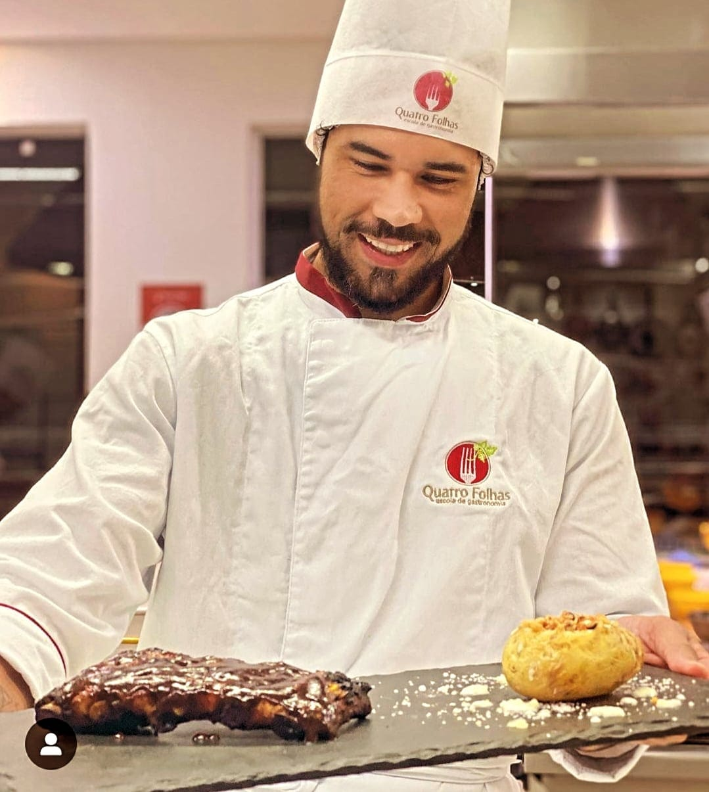
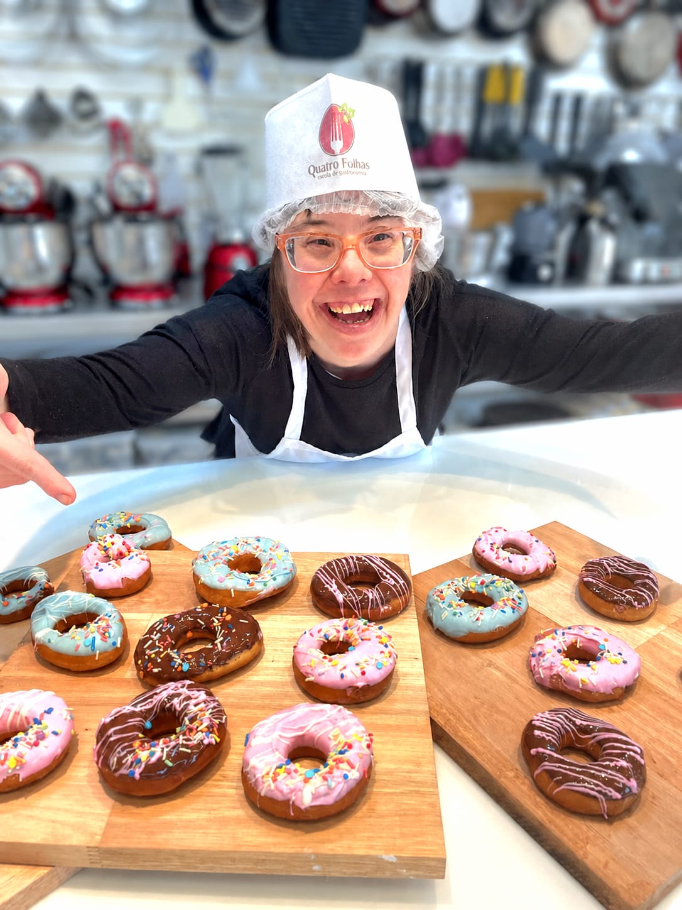
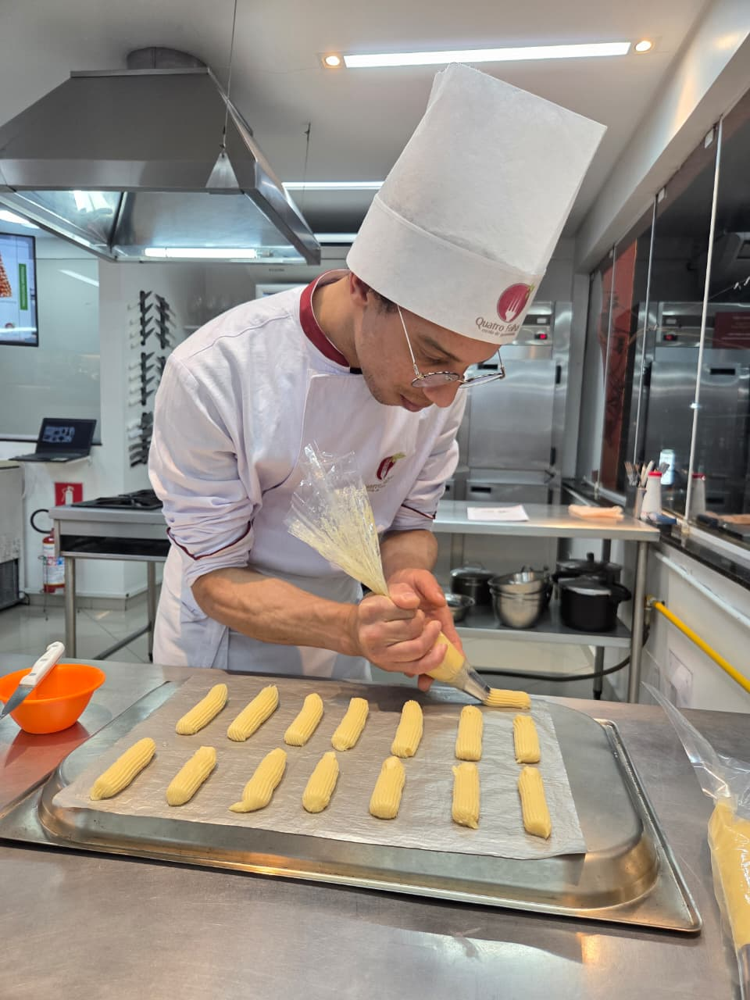
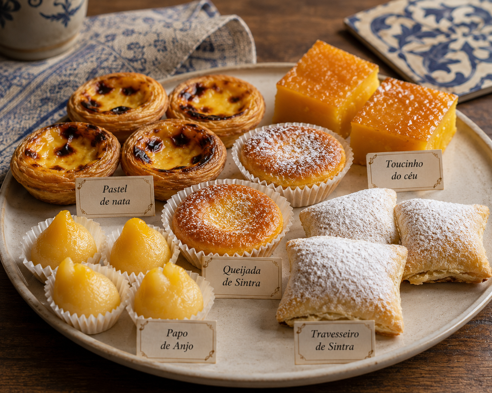
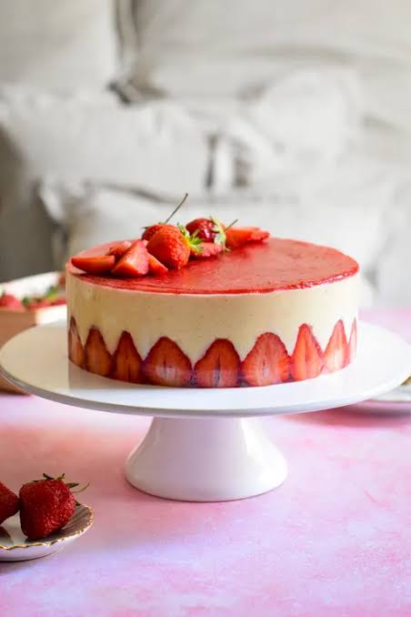
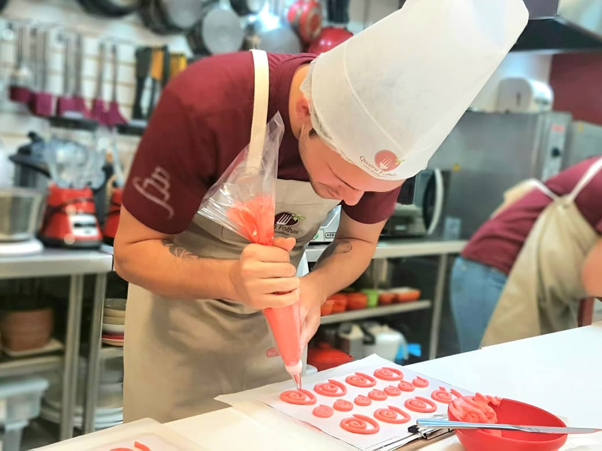
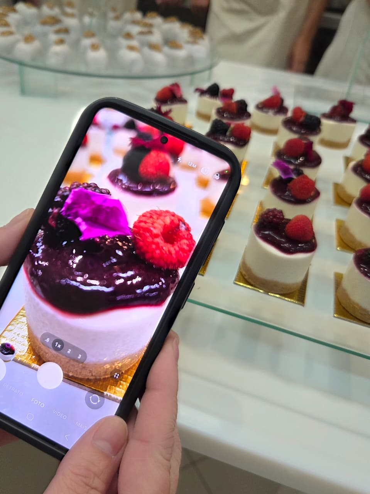

Você prepara
O aluno participa diretamente da execução dos preparos.
A Escola
Desde 2015, mais de 2.860 alunos já passaram pelas bancadas da Quatro Folhas. Uma escola de gastronomia em São Paulo criada para quem quer aprender de verdade, com prática, acompanhamento próximo e estrutura profissional.

Por dentro
Estrutura pensada para uma experiência de ensino prática, organizada e profissional, com cozinha equipada, bancadas de trabalho e ambientes reais de aula.


Como é estudar aqui
Na formação profissional, o aprendizado acontece na bancada. Os alunos executam técnicas, manipulam ingredientes, trabalham com equipamentos profissionais e desenvolvem autonomia ao longo do curso.
Ver cursos profissionaisO aluno participa diretamente da execução dos preparos.
Os professores explicam técnica, processo e aplicação, não apenas receitas.
A prática contínua desenvolve segurança, organização e domínio técnico.
O objetivo é aplicar o conhecimento fora da escola, em casa, profissionalmente ou em negócio próprio.
Alunos reais
Tem quem chegue para começar uma profissão. Tem quem queira transformar um hobby em conhecimento. Tem quem busque empreender, se aperfeiçoar ou simplesmente cozinhar melhor.





Professores
Na Quatro Folhas, formação profissional e experiência de mercado caminham juntas. O corpo docente reúne professores pós-graduados e profissionais atuantes, com acompanhamento próximo durante as aulas.
Falar com a equipeEstrutura em números
Números confirmados da escola, sem projeções ou dados inventados.
Histórias que começaram dentro da nossa cozinha.
Experiência dedicada à formação gastronômica.
Profissionais atuantes e próximos dos alunos.
Além da aula
Itens e recursos que ampliam a percepção de valor dos cursos profissionalizantes. Os itens incluídos podem variar conforme o curso.
Resultados
Fotos reais de aulas, preparos e experiências mostram a prática que acontece na escola.





Intercâmbio
Alunos dos cursos profissionalizantes podem participar da experiência gastronômica internacional da Quatro Folhas em Buenos Aires, ampliando repertório cultural e contato com outras referências da gastronomia.
Conhecer o intercâmbio

Mídia e produção
A Quatro Folhas já recebeu gravações, programas, realities, produções e projetos de mídia. A estrutura também atende marcas e equipes que precisam de uma cozinha real para produzir conteúdo.
Ver mídia e gravaçõesHistória
A história fica abaixo porque a decisão do visitante depende primeiro de estrutura, prática, confiança e clareza sobre como é estudar aqui.
Nasce a Quatro Folhas, com foco em ensino prático de gastronomia.
Mais de 2.860 alunos já passaram pela escola, que hoje reúne formação profissional, cursos, experiências, projetos educacionais, empresas e marcas.
Visita
Conheça a cozinha, veja as bancadas, equipamentos e ambientes e converse com nossa equipe sobre o curso mais adequado ao seu objetivo.